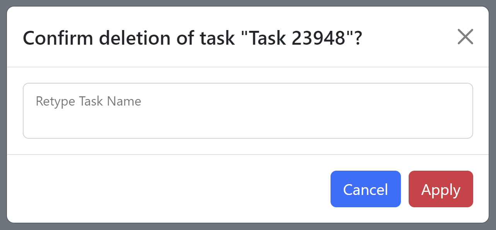

Manage Tasks#
Tasks within Scout represent a group of images assigned to either a user or to a machine-learning model for annotation, which includes:
drawing a bounding box around all animals of interest
labeling the species for each bounding box
The same image can appear in multiple Tasks, which can be duplicated for parallel annotation by different users. Different users can annotate the same images in different tasks. Tasks go through three stages:
Annotation: Annotating animals in the images is the most important function of Scout. It is the only stage required for the downstream analysis of the tasks. Annotation can be performed by Lab Leads and Annotators.
Ground truth: The ground truth stage of a task involves the review, correction, and ultimately the approval of all annotations in an image by the Lab Lead. Once an image has gone through ground truth in any task, it does not appear for annotation or ground truth in another task that may contain it.
Division line: If an image is part of a sequence of images with annotated animals within them, then a Lab Lead may draw division lines to indicate overlap between images.
Export: Once they have been through all the stages mentioned, tasks are ready to export for analysis in third-party applications. Note: tasks don’t strictly have to go through the stages above to be exported, aside from annotation.
Once all images in a task have gone through annotation, ground truth, and division lines, the task is considered completely done. Lab Leads ultimately creates tasks to help break up large volumes of aerial survey images into manageable chunks for Annotators to work through, and many tasks may make up a single transect, flight, and survey. The following recommendations apply when creating tasks:
All images in a task should be from a single side of the airplane. This is important for the sequencing of images to draw division lines.
A task should ideally correspond to either a single transect or a subset of images from that transect.
Viewing Tasks#
Click the Tasks button on the header navigation menu to view the Tasks page.
Task Table#
Tasks are listed in rows in the task table below the filters. The details for each task are displayed in a horizontal row to the right of the task name. Filter tasks to view only tasks with specified qualities.
Click the action buttons on the right side in each task row to annotate, ground truth, draw division lines, delete the task, or view the images in a task.
The table columns are:
Task Name: name given to the task when it was created.
Side: side of the airplane that images in the task were from, Left or Right.
Order: sequential or random.
Assignee: user assigned to the task.
Date Created: creation date of the task.
A%: percentage of image annotation complete in the task.
G%: percentage of image ground truth review complete in the task.
D%: percentage of image division line annotation complete in the task.
Annotate button: if images are still available for annotation in the task, this navigates to the annotation page.
Ground Truth button: if task annotation is 100% complete and images are still available for ground truth review in the task, this navigates to the ground truth page.
Division Lines button: if task ground truth is 100% complete and images are still available for division line annotation in the task, this navigates to the division line page.
Delete button: deletes the task. Deleting a task requires manual confirmation to avoid accidental data loss.

Images button: navigates to the Image Gallery page to preview all images associated with that task.
Under the table, the buttons to navigate through table data are:
Next button: provides access to subsequent rows of table data if more tasks match the filter criteria than can be displayed in the table
Previous button: provides access to previous rows of table data if more tasks match the filter criteria than can be displayed in the table
Note
You must click your browser’s reload button to see changes to the Tasks view that have occurred since you loaded the page.
Filtering Tasks#
Filter tasks by any of the following in the Filters section above the tasks:
Task Name: Search for a task by its name. Enter the task name in the Task Name field, then click the Filter button in the top right corner.
Date created start: filter tasks created from this date. Note: the dates are for task creation and not based on the dates of images in the tasks. Click the calendar icon to the right of the Date Created Start field and select a date, then click the Filter button in the top right corner.
Date created end: filter tasks created up until this date. Click the calendar icon to the right of the Date Created End field and select a date, then click the Filter button in the top right corner.
Assignee: filter tasks to the specified users or ML models. Select the assignee/s in the scrollable Assignee list box, then click the Filter button in the top right corner.
Stage: filter tasks to their stage in the annotation, ground truth, and line division workflow. Select the stage/s of progress in the scrollable Stage list box, then click the Filter button in the top right corner.
Ordering type: filter tasks by sequential or random ordering type. Click the Ordering type dropdown menu, select an option, then click the Filter button in the top right corner.
Tags: filter tasks by Tags you have created. Select the tag/s in the Tags list box, then click the Filter button in the top right corner.
To select multiple Assignee, Stage, or Tags filters, hold down the Control key (Ctrl) on your keyboard while selecting multiple filters.
To export a comma-separated values (CSV) file of annotation or image data filtered according to the Filters on the page, click the Export Filtered Results button and select an option. The export will be automatically generated.
To return to the full view of unfiltered tasks, click the Reset button on the right of the Filter button.
Creating and assigning tasks#
Here’s how to create a new task to assign to a user:
Select Tasks from the Scout menu bar.
Click the +Create Task button on the Tasks page.
In the New Task form, do the following information:
Enter a unique name for the task in the Task Name field. Human-readable task names are recommended, such as:
Lewa Flight 2022-09-15 Transect 1 Images 1-500Select the appropriate annotator or ML model from the Assignee dropdown list.
Select the appropriate side of the plane that the camera was on when it took the images of this task, Left or Right, in the Camera Side field.
Click Select Images to add images to the task using the Select Images dialog box.
In the Select Images dialog box, leverage the following fields to specify the images you want added to the task. As you adjust filters, the matching images count updates. Each field adds a logical AND to the matched images and further subsets matching to those images that match all chosen criteria.
Enter letters and numbers to filter images by File Name, updating the matching images count as you type.
Enter or select the name of an existing task that already contains a desired subset of images in the Duplicate From Existing Task field.
Select Start and End dates to further filter images by. These filters match against the
EXIFcreation dates of the images.Select a range of numbers in the Subset Range (inclusive) field. Where a large number of images might match your criteria, a range allows you to specify a fixed, sorted subset. For example, you might select criteria matching 1000 images and assign a range of 1 to 500 in the task for the first annotator and a range of 501 to 1000 in the task for the second annotator.

Click Submit to create the new task. On successful creation, the task becomes available in the Tasks view.
Note
There may be a short delay after creation of a task before it is ready for annotation, depending on the number of images in it.
Warning
If during task creation you see the following message in the New Task form, please be aware that new images are being added to Scout.
If the images you need to add to this task have already been ingested, you can ignore this message. However, it is recommended to wait for ingestion to complete and for the alert to drop before creating your new task. Having all images present is important if you wish to select a range of images for the task, and not all of those images have been added yet.